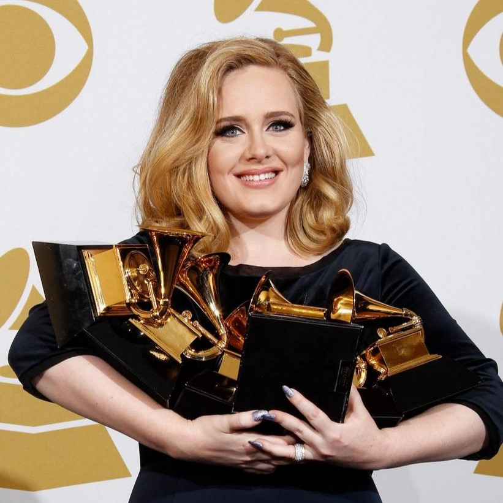

Now, after releasing several albums and singles, Adele has become a worldwide star garnering several awards and going on many sold-out tours! Besides this, she is also loved because of her relatable figure and persona. From chart-topping blues and gospel-disco hits to brassy songs for big films, Adele hads truly moved the masses with both her immense talent and great personality.

She also won many awards as an artist such as 1 Grammy Award as Best New Artist, 8 Billboard Music Awards for Top Pop Artist, Top Female Artist, and more, 2 AMA's for Favorite Pop/Rock Female Artist and Favorite Adult Contemporary Artist, 1 People's Choice Award for Favotite Female Artist, and several Guiness World Record Awards.